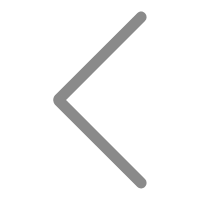

<ion-header>
  <ion-toolbar>
    <ion-buttons slot="start">
      <ion-back-button color="dark"></ion-back-button>
    </ion-buttons>
    <ion-title>myCalendar</ion-title>
  </ion-toolbar>
</ion-header>

<ion-content>
  <div class="app-common-bg">
    <div style="display: flex;margin: 10px 0;justify-content: center;">
      <div (click)="preMonth()"></div>
      <p style="line-height: 30px;font-size: 20px;margin: 0 5px;">{{select_year}}年{{select_month}}月</p>
      <div (click)="nextMonth()"></div>
    </div>
    <div>
      <div class="calendar-table-item">日</div>
      <div class="calendar-table-item">一</div>
      <div class="calendar-table-item">二</div>
      <div class="calendar-table-item">三</div>
      <div class="calendar-table-item">四</div>
      <div class="calendar-table-item">五</div>
      <div class="calendar-table-item">六</div>
      <div class="calendar-table-riqi" *ngFor="let day of days" (click)="change_day(day.day)">
        <div class="calendar-table-day">
          <div [ngClass]="{'choosedDay': day.choosed,
          'currentDay': (day.day == current_day && current_month == select_month && current_year == select_year)}">
            {{day.day}}</div>
        </div>
      </div>
    </div>
  </div>
  <div class="homing" (click)="homing()">回到当前</div>
</ion-content>
